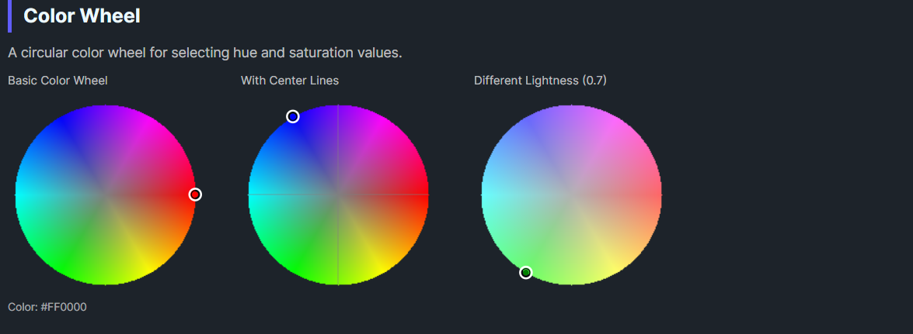

DaisyColorWheel is a circular color wheel control for selecting hue and saturation values in the HSL color space. It renders a full-spectrum color wheel with a draggable selection marker, allowing intuitive color picking through mouse interaction. The wheel displays colors at a configurable lightness level.
| Property | Type | Default | Description |
|---|---|---|---|
Color |
Color |
Red |
The selected RGB color |
HslColor |
HslColor |
H:0, S:1, L:0.5 |
The HSL representation of the color |
Lightness |
double |
0.5 |
Lightness value (0-1) for the wheel display |
SelectionSize |
double |
10 |
Size of the selection marker circle |
SelectionOutlineColor |
Color |
White |
Color of the selection marker outline |
ShowCenterLines |
bool |
false |
Whether to show center crosshairs |
ColorStep |
int |
4 |
Rendering quality (lower = smoother, higher = faster) |
OnColorChanged |
Action |
null |
Optional callback invoked when color changes |
The color wheel maps:
Lightness propertyClicking or dragging on the wheel updates both the Color and HslColor properties.
colorWheel.ColorChanged += (sender, e) =>
{
// e.Color contains the new color
UpdatePreview(e.Color);
};<colorpicker:DaisyColorWheel
OnColorChanged="{Binding HandleWheelColorChanged}" />// Direct assignment
var wheel = new DaisyColorWheel
{
OnColorChanged = color => SelectedColor = color
};<!-- Basic color wheel -->
<colorpicker:DaisyColorWheel
Width="200"
Height="200"
Color="{Binding SelectedColor, Mode=TwoWay}" />
<!-- With lightness control -->
<StackPanel Spacing="8">
<colorpicker:DaisyColorWheel
x:Name="wheel"
Width="200"
Height="200"
Lightness="{Binding #lightnessSlider.Value}" />
<Slider
x:Name="lightnessSlider"
Minimum="0"
Maximum="1"
Value="0.5" />
</StackPanel>
<!-- High quality rendering -->
<colorpicker:DaisyColorWheel
ColorStep="1"
Width="300"
Height="300" />
<!-- With center crosshairs -->
<colorpicker:DaisyColorWheel
ShowCenterLines="True"
SelectionSize="12"
SelectionOutlineColor="Black" />
<!-- With callback -->
<colorpicker:DaisyColorWheel
OnColorChanged="{Binding OnWheelColorSelected}" />The HslColor struct represents colors in HSL space:
| Property | Type | Range | Description |
|---|---|---|---|
H |
double |
0-359 | Hue angle in degrees |
S |
double |
0-1 | Saturation (0 = gray, 1 = vivid) |
L |
double |
0-1 | Lightness (0 = black, 0.5 = pure, 1 = white) |
A |
int |
0-255 | Alpha/transparency |
// Create from HSL values
var hsl = new HslColor(180, 0.8, 0.5); // Cyan-ish
// Create from RGB Color
var hsl = new HslColor(Colors.Red);
// Convert to RGB
Color rgb = hsl.ToRgbColor();
// Implicit conversions
Color color = hsl; // HSL to Color
HslColor hsl2 = Colors.Blue; // Color to HSLDaisyColorSlider with Channel="Lightness") for complete HSL control.ColorStep="1" for smooth gradients on larger wheels; use higher values for better performance.Lightness when selecting colors.ShowCenterLines="True" to help users find the exact center (gray/neutral colors).SelectionOutlineColor to a lighter color for visibility.This control is part of the Flowery.Uno color picker suite, inspired by the Cyotek ColorPicker library (MIT License).